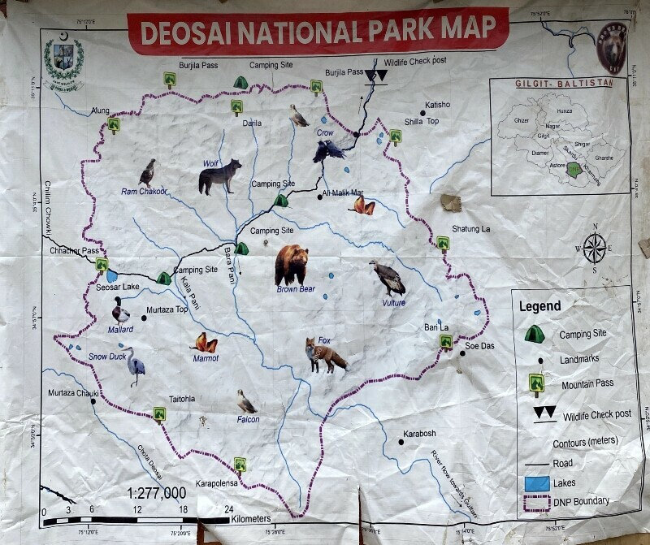

Skardu is a breathtaking mountain city and district capital in the Gilgit-Baltistan region of Pakistan,
situated at roughly 2,500 meters (8,200 feet) elevation at the confluence of the Indus
and Shigar Rivers. Famous as a premier destination for tourism, mountaineering, and trekking,
it acts as a gateway to the Karakoram range and several of the world’s highest 8,000-meter peaks
